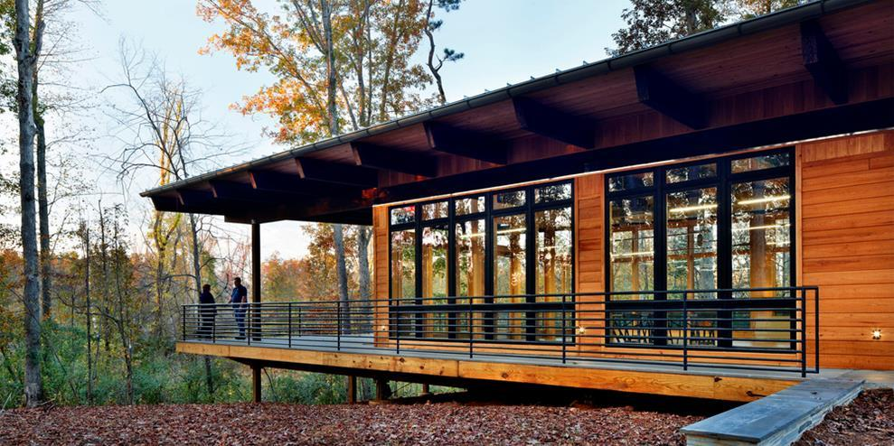
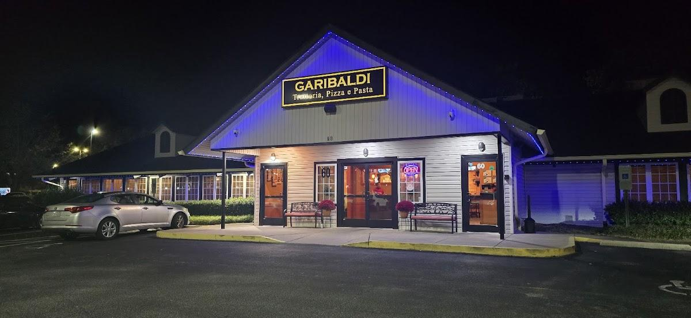

Your Next Adventure Starts Here.
Discover beautiful parks, delicious local food, and unforgettable experiences for the whole family.
Start Exploring →Welcome to Garner, North Carolina
Garner is a wonderful place for families to explore. From scenic walking trails and peaceful parks to delicious local restaurants, there is something for everyone to enjoy.
Something for Everyone
Nature
Explore beautiful parks and scenic walking trails.
Local Dining
Discover delicious meals and local restaurants.
Family Fun
Create unforgettable memories with your family.
Explore Our Local Guide
Find the perfect places to visit, explore, and enjoy.

OUTDOOR ADVENTURESThings to Do
Discover beautiful parks, walking trails, playgrounds, and exciting outdoor activities for the entire family.
Explore Activities →
LOCAL FAVORITESFood & Dining
Discover family-friendly restaurants and enjoy Southern, Italian, and Mexican cuisine.
Explore Restaurants →Why Visit Garner?
Garner offers a welcoming community and plenty of opportunities for families to spend quality time together.
- Beautiful parks and scenic nature trails.
- Fun outdoor activities for all ages.
- Family-friendly local restaurants.
- Relaxing places to enjoy the outdoors.
- Opportunities to create lasting family memories.
Plan Your Perfect Family Day
Make the most of your visit to Garner with these simple ideas.
Morning
Start your day with breakfast at a local restaurant.
Afternoon
Explore a nature trail or enjoy a family picnic.
Evening
Finish your adventure with a delicious family dinner.